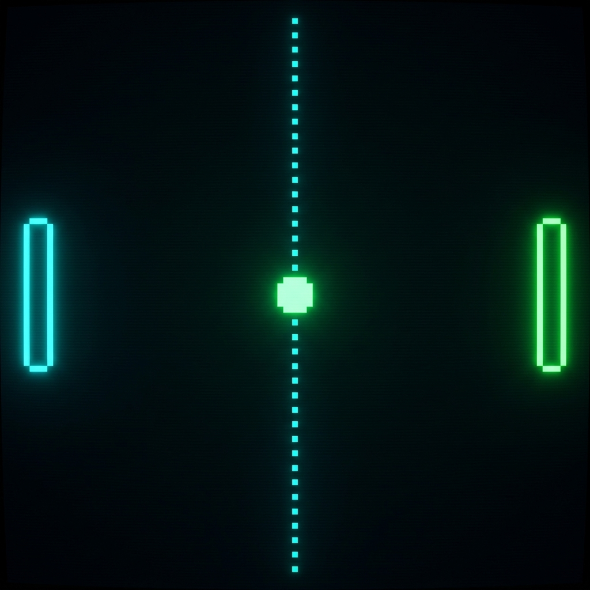
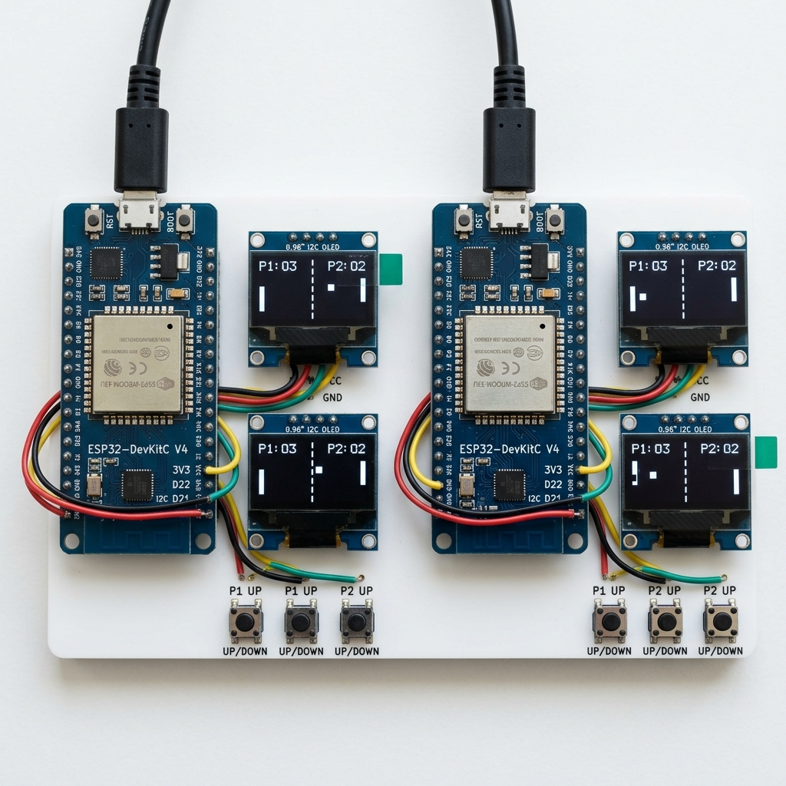

Jogo clássico distribuído em tempo real usando microcontroladores, displays OLED e um servidor local em Go.
Recriar o clássico jogo Pong em uma arquitetura distribuída real, onde cada jogador possui seu próprio hardware físico.
Um sistema multiplayer em tempo real composto por dois ESP32 (controles + displays) conectados via Wi-Fi a um servidor central que gerencia toda a física do jogo.
Integrar conceitos de sistemas embarcados, redes de computadores e programação concorrente em um projeto funcional e interativo.
WebSocket bidirecional entre ESP32 e servidor, transmitindo frames a ~30 FPS.
Botões físicos no ESP32 enviam comandos de movimento. O servidor valida e calcula as colisões.
Cada ESP32 renderiza o estado do jogo em sua própria tela OLED 128×64.
ESP32 conecta ao Wi-Fi e abre WebSocket com o servidor. O servidor atribui o lado (esquerda/direita) e envia mensagem {"type":"setup"}.
Ambos conectados → estado waiting_ready. Cada jogador pressiona um botão para sinalizar pronto.
Servidor processa inputs, atualiza física, serializa estado JSON e enfileira frames para ambos os clientes simultaneamente.
Botão pressionado → ESP32 envia {"type":"input","dir":-1}. Só envia quando a direção muda (otimização de banda).
Cada ESP32 recebe o frame e desenha raquetes, bola e placar diretamente no display OLED via I2C.
Servidor envia ping a cada 1s; ESP32 responde com pong. Conexões mortas são detectadas e removidas em até 4s.
Microcontrolador com Wi-Fi 802.11 b/g/n integrado. Roda o firmware Arduino, gerencia botões físicos, exibe o jogo no OLED e mantém a conexão WebSocket com o servidor.
Tela monocromática de 128×64 pixels, comunicação I2C a 400 kHz (Fast Mode). Endereço padrão 0x3C. Exibe raquetes (3×16px), bola (4×4px) e informações de lobby.
2 botões por ESP32 (Cima / Baixo), conectados com pull-up interno nos pinos GPIO 12 e 14. Detecção de borda de descida para evitar envios repetidos.

Computador ou VPS rodando Go, acessível na rede local via Wi-Fi. Containerizado com Docker.
O firmware roda em loop não-bloqueante. Cada iteração do loop() executa em ordem:
Detecta queda de sinal, reinicia WebSocket e tenta reconectar automaticamente a cada 10s.
Drena a fila de mensagens recebidas do servidor. Ao receber um frame state, atualiza o GameSnapshot global.
Só redesenha se renderDirty = true e o intervalo mínimo passou (33ms em jogo, 200ms em menus).
Envia comando apenas quando a direção muda. No lobby, detecta borda de descida com debounce de 200ms.
5 estados distintos. Transições controladas por eventos de conexão, comandos ready e condições físicas (ponto, vitória).
Ticker de 33ms chama engine.Update() e serializa estado JSON para ambos os clientes.
Ângulo de rebatida depende do ponto de impacto na raquete. A cada rebatida, velocidade aumenta 5%.
sync.Mutex protege o estado da engine acessado concorrentemente pelo loop físico e pelos handlers de rede.
Firmware (C++ / Arduino)
fillRect(), drawFastVLine() e renderização de texto.main, test_hw, test_ping.WiFi.h, Wire.h e toda a API Arduino familiar.Servidor (Go)
/ws para WebSocket e / para healthcheck.O ESP32 sofria resets espontâneos ao inicializar o rádio Wi-Fi. O pico de corrente (~300mA) no momento do WiFi.begin() ativava o detector de brownout do chip, causando reinicializações em loop.
Inserimos a instrução WRITE_PERI_REG(RTC_CNTL_BROWN_OUT_REG, 0) como primeiro comando do setup(), antes de qualquer inicialização de hardware, eliminando o problema definitivamente.
Inicialmente o jogo apresentava atraso perceptível. O servidor enviava todos os frames mesmo quando o cliente não conseguia consumi-los a tempo, gerando um backlog de frames antigos que atrasava progressivamente o estado exibido.
Implementamos a estratégia enqueueLatest(): canal de buffer tamanho 1 por cliente. Se o cliente estiver lento, o frame antigo é descartado e substituído pelo mais recente, garantindo que o jogador sempre veja o estado atual, jamais um estado defasado.
| Parâmetro | Valor |
|---|---|
| Taxa de Frames (Servidor) | ~30 FPS |
| Intervalo de Renderização (OLED) | 33ms (jogo) / 200ms (menu) |
| Timeout de Conexão Wi-Fi | 20s (+ reconexão auto) |
| Detecção de Cliente Morto | ≤ 4 segundos |
| Pontuação para Vitória | 11 pts (dif. ≥ 2) |
| Aceleração da Bola | +5% a cada rebatida |
Firmware possui 3 builds distintos no PlatformIO:
Exibição da tela de conexão Wi-Fi com IP e RSSI no OLED.
Cada ESP32 recebe seu lado (Esquerda / Direita) via mensagem de setup.
Tela mostra status de cada jogador em tempo real.
Controle com botões Cima/Baixo. Placar em tempo real nas duas telas.
Tela de vencedor por 5 segundos → retorno automático ao lobby.
O projeto integrou sistemas embarcados, programação de redes e concorrência em Go para criar uma experiência multiplayer física real.